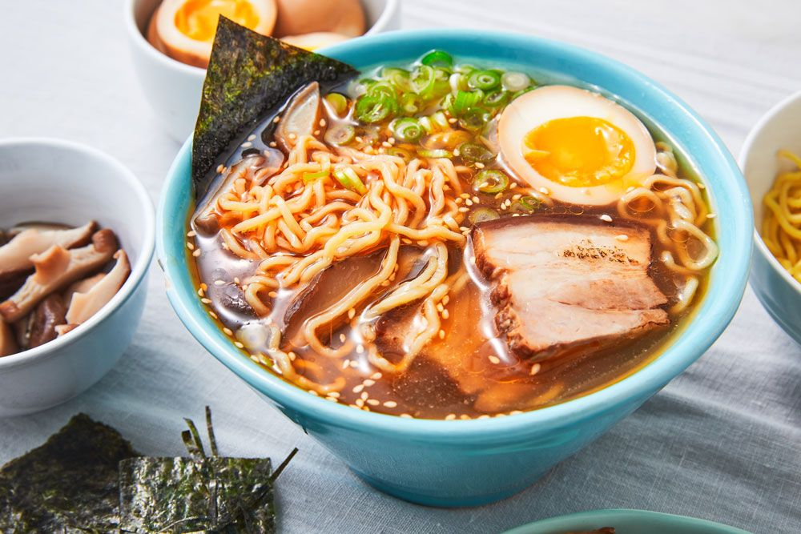

Black Tonkotsu Ramen

Description
Tonkotsu ramen is rich, filling, and easy to make at home with a luscious slow-cooked pork and chicken broth, fresh noodles, soft yolks, and tender pork belly.
Ingredients
- 4 lb pig trotters, ask the butcher to cut into horizontal slices
- 2 lb chicken backs, cut into small pieces
- 1 lb chicken feet
- 1 lb pork belly scraps, chopped up
- 1 large onion, peeled and slit around
- 1 whole garlic head, sliced in half horizontally
- 2 inches ginger, sliced
- 1 leek, cleaned and roughly chopped
- 15 green onions, white parts only, cut them in half across
- 1 cup mushrooms
- ¼ lb (4-5 oz) pork fatback
Tonkotsu Ramen Broth Cooking Instructions
- Place the chicken backs and pork bones in a heavy bottomed stock pot.
Add enough water to fully cover them. Cover with a lid. Over high heat, bring the water to a boil.
Once boiled, drain the bones and wash any dark marrow or coagulated blood off from the pork with cold water and a chopstick or fork.
The bones should have no dark color left in them to obtain a light, milky color.
- Rinse the pot, put the bones back in along with the rest of the ingredients for the broth except the fatback.
Add water to just cover the ingredients. Over high heat, bring the water to a rolling boil, then turn down temperature to a low boil/very lively simmer.
Let boil for 12-18 hours, adding water to keep the ingredients submerged.
- The last 30 minutes to 1 hour before it's done, place the fatback on a sieve or strainer,
shallowly put it into the broth, cover the pot and let the fat cook. Remove and finely mince the fat.
Keep in an airtight container in the fridge until ready to serve.
- Pour the broth through a fine mesh sieve into a large bowl (or multiple containers) to remove solids.
Let chill in the fridge until solid, then spoon the fat off the top.
Back To Recipes